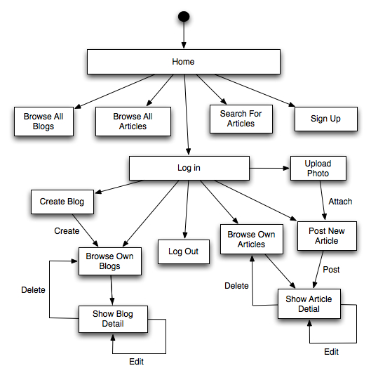

Documentation
1. How to use
For all general users, they can browse all articles included in all blogs within this weblog system and use either a search string or a tag name to search for certain articles. Each article contains many comments in which public users can only view them. In order to leave a comment to an article, it is to sign up an account.
For registered users will be able to create as many as blogs they want and post an article to one of these blogs. If you want to attach a photo to the article, you will need to go to "upload photo" page to upload a photo. After successfully uploading a photo, you can see it on the photo selection when you post articles.
2. Transition diagram
